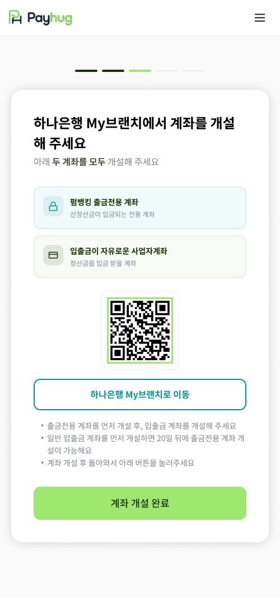

PART 2 · 가입에서 선정산 개시까지
15 / STEP 6
선정산 전용계좌
(락계좌)
개설
하나은행 My브랜치로 나가서 계좌를 만들고 돌아오는 단계입니다

1
2
3
4
1
계좌를
두 개
만들어야 합니다
펌뱅킹 출금전용 계좌 = 카드사·배달앱 정산금이 들어오는 곳
입출금 자유 사업자계좌 = 선정산금을 받을 곳
2
하나은행 My브랜치에서 개설
QR 또는 버튼으로 이동합니다. 페이허그 앱 안에서 개설되는 게 아니라 은행 사이트에서 진행합니다
3
순서가 정해져 있습니다
출금전용 계좌를
먼저
만들고, 그다음 입출금 계좌를 만듭니다
4
개설 후 돌아와서 완료 버튼
이 버튼을 눌러야 다음 단계로 넘어갑니다
일반 입출금 계좌를 먼저 만들면
20일이 지나야
출금전용 계좌를 만들 수 있습니다 — 현장 이탈 1순위 지점
가맹점 앱 · 계약 STEP3 락계좌 개설 안내 화면
pay
hug